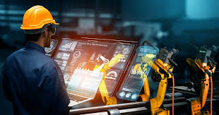

Reimaginando la Eficiencia Industrial
Kentu IIOT: Mantenimiento Inteligente y OEE Optimizado
Descubre el ProgramaNuestra Visión
Somos desarrolladores a pie de planta que entendemos tus desafíos. Kentu IIOT nace de la necesidad real de transformar la gestión de activos y procesos industriales. Nuestra misión es empoderar a tu equipo con datos accionables y herramientas intuitivas para un futuro más productivo y sostenible.

Datos en Tiempo Real
Recopila información crucial de tus máquinas al instante para decisiones rápidas y precisas.

Análisis Accionables
Convierte datos brutos en insights significativos para optimizar operaciones y rendimiento.

Control Total
Obtén una visión completa del estado de tus activos, predice fallos y planifica mantenimientos.

El Programa Kentu IIOT: Pilares de la Eficiencia
Kentu Vision: Mantenimiento Predictivo Avanzado
- Sensores inteligentes y análisis de vibraciones.
- Termografía y detección temprana de fallos.
- Alertas personalizables y diagnóstico remoto.
- Reducción significativa de tiempos de inactividad no planificados.
Kentu Pulse: Optimización de OEE en Tiempo Real
- Monitoreo continuo de Overall Equipment Effectiveness (OEE).
- Análisis de causas raíz para pérdidas de productividad.
- Informes personalizables y cuadros de mando intuitivos.
- Identificación de cuellos de botella y oportunidades de mejora.
Kentu Connect: Integración y Escalabilidad
- Compatible con tus sistemas SCADA, ERP y MES existentes.
- API robustas para una integración fluida.
- Arquitectura modular y escalable a cualquier tamaño de operación.
- Seguridad de datos de nivel industrial.
Transforma tus Operaciones, Optimiza tu Futuro
Descubre cómo Kentu IIOT te ayuda a alcanzar nuevos niveles de rendimiento y confiabilidad.
Beneficios Clave de Kentu IIOT
Aumento de Productividad
Maximiza el tiempo de actividad de tus máquinas y el rendimiento general de la planta.
Reducción de Costos
Minimiza gastos inesperados por fallas y optimiza el uso de recursos.
Mantenimiento Proactivo
Pasa de un mantenimiento reactivo a uno predictivo y preventivo, extendiendo la vida útil de tus activos.
Decisiones Informadas
Accede a análisis profundos para tomar las mejores decisiones estratégicas y operativas.
Contáctanos
¿Listo para llevar tu planta al siguiente nivel? Contáctanos hoy para una consulta personalizada o una demostración de nuestro programa Kentu IIOT.